01 - Matière de test exhaustive
Vérification de l'empilement et de la fluidité des colonnes sur une grille sans marges parasites.
« Photographier Montmartre avec Christophe a été une révélation. Il a l'art de vous faire voir la géométrie là où on ne voyait que des pavés, et de capturer cette lumière matinale unique qui donne l'impression d'être seul au monde. »

01A. Structure Simple (1 Colonne avec Images)
Axe Principal : La Basilique du Sacré-Cœur
Dominant Paris du haut de la Butte Montmartre, la basilique du Sacré-Cœur offre un sujet d'étude idéal pour la contre-plongée et l'analyse des perspectives. Sa pierre de Château-Landon, qui sécrète de la culatine au contact de la pluie, lui confère cette blancheur éternelle si particulière sous la lumière parisienne.
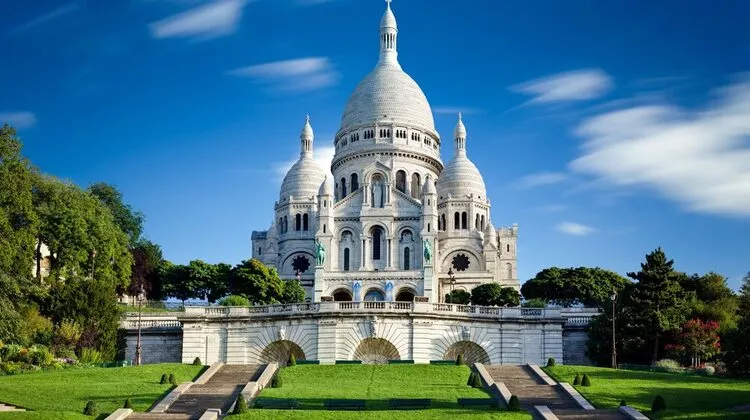
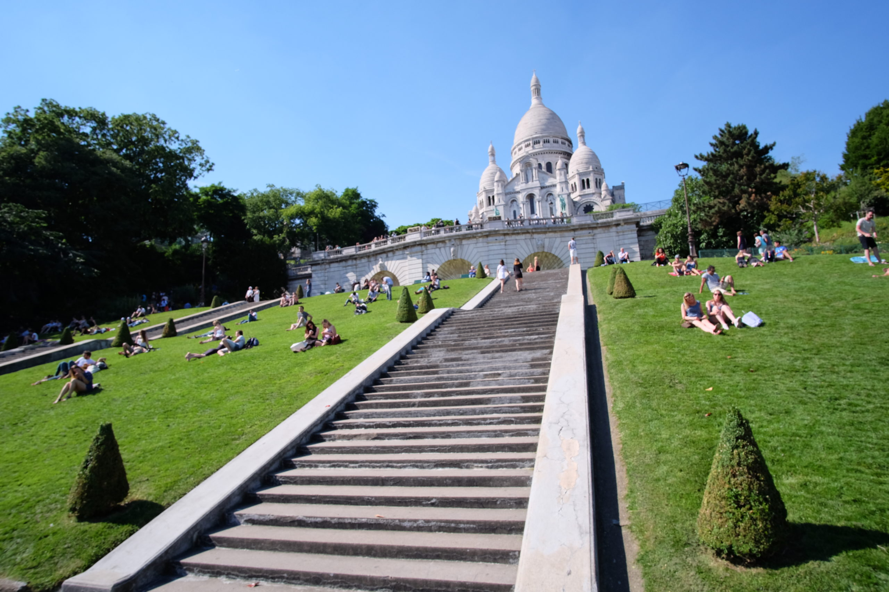
L'ascension de la Butte
Les 222 marches qui mènent au sommet sont une véritable épreuve physique pour les visiteurs mais un régal visuel pour le photographe. Chaque palier dévoile une perspective changeante sur les façades parisiennes et les ferronneries des balcons.
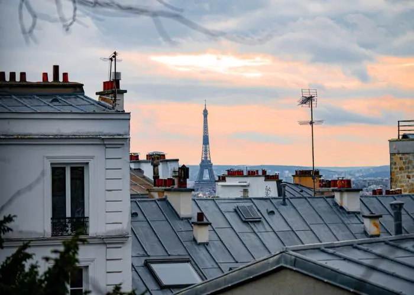
Géométrie des dômes
L'architecture romano-byzantine de l'édifice se distingue par ses dômes imbriqués, créant un rythme visuel très fort. En photo d'architecture, cette symétrie permet de jouer avec les formes géométriques pures.
Lumière sur la pierre
Les variations de lumière au fil de la journée transforment radicalement les volumes. Les ombres portées sur les façades blanches soulignent les détails sculpturaux et les bas-reliefs.
Place du Tertre
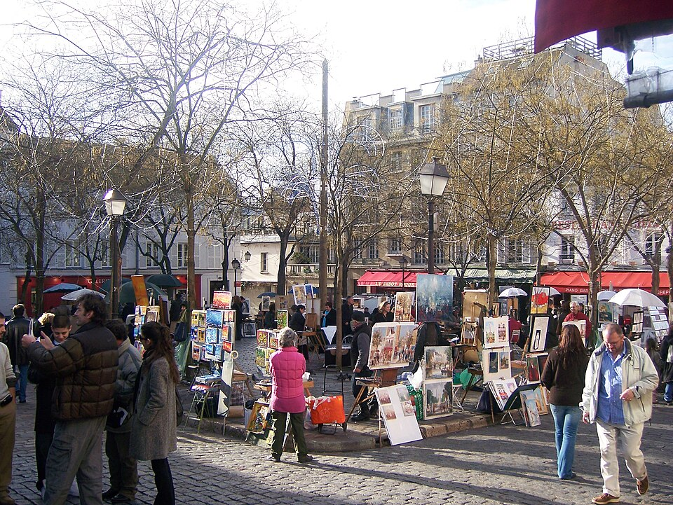
Juste à côté du Sacré-Cœur, l'ambiance change du tout au tout. Les chevalets des peintres et les terrasses créent un désordre graphique très intéressant à photographier en plan large.
Ruelles escarpées
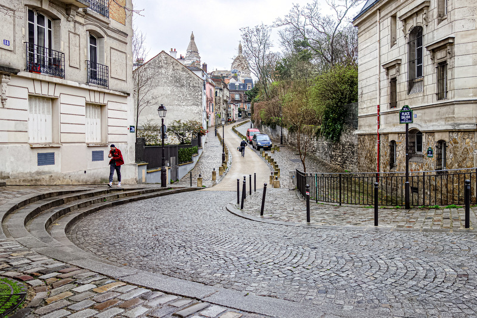
Les rues pavées qui montent vers la Butte sont rythmées par les lignes de fuite des toits et les lampions anciens. Elles offrent une belle profondeur de champ.
Escaliers montmartrois
Véritable signature du quartier, les escaliers interminables créent des motifs géométriques parfaits pour des compositions en noir et blanc très contrastées.
Les vignes
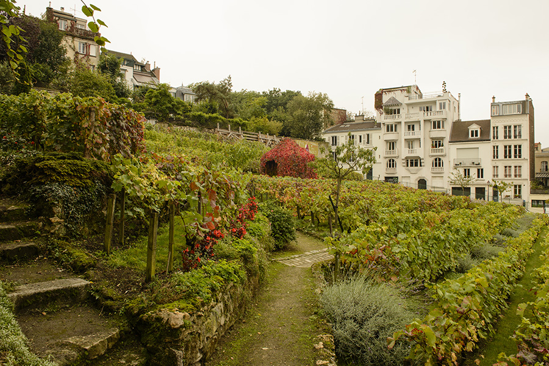
Un bout de campagne préservé en plein Paris, offrant un point de vue unique sur le nord de la capitale.
Le Lapin Agile

Ce cabaret historique à la façade rose typique est un régal pour les photographes qui aiment les contrastes de couleurs.
Maison Rose
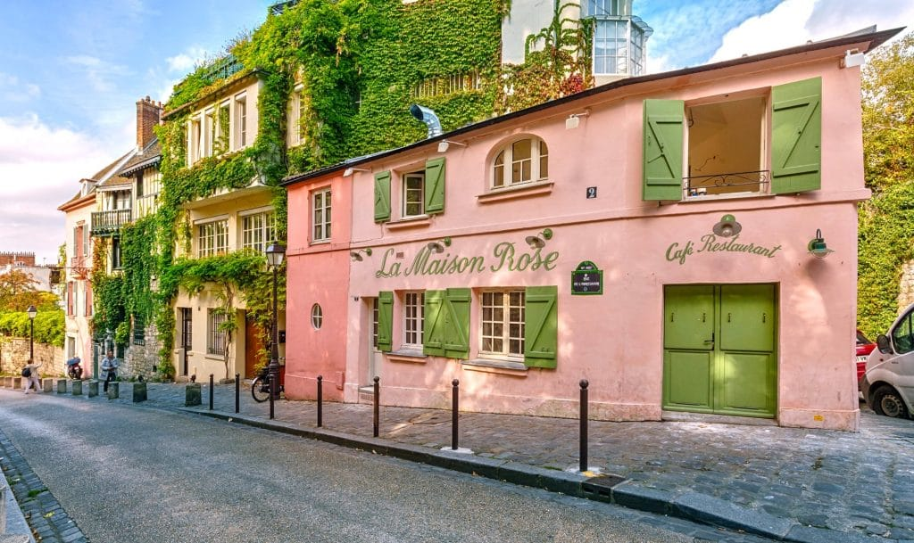
Située au coin de la rue de l'Abreuvoir, elle attire l'œil par son architecture pittoresque et ses teintes pastel.
Toits de Paris
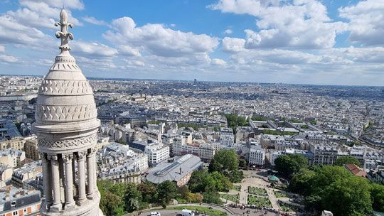
Depuis le parvis, la vue panoramique sur les toits parisiens permet de jouer avec les plans successifs et la brume.
01B. Structure Duo (2 Colonnes avec Images)
Axe Principal : Le village des artistes
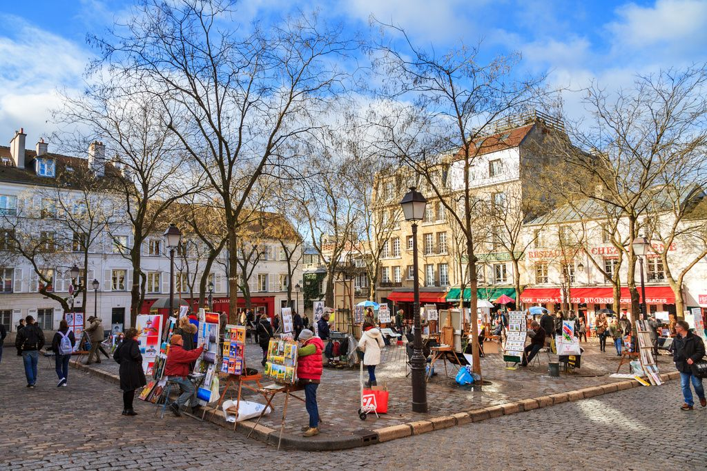
Photographier la Place du Tertre demande de la patience pour capter l'instant où l'humain s'intègre parfaitement dans le décor urbain. Les terrasses des cafés et les devantures des boutiques anciennes offrent une palette de textures infinie.
Axe Principal : Les détails du Sacré-Cœur
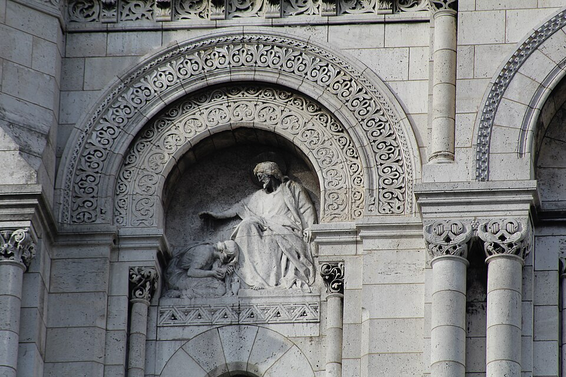
En se rapprochant des murs de la basilique, on découvre la finesse du travail de la pierre. Les sculptures, les gargouilles et les arcades créent des jeux d'ombre et de lumière parfaits pour le détail architectural.
01C. Structure Duo (2 Colonnes)
Axe Principal : L'histoire des cabarets
Montmartre est indissociable de sa vie nocturne historique. Du Moulin Rouge au Lapin Agile, ces établissements ont forgé l'identité culturelle et artistique de la Butte. En photo de nuit, leurs enseignes lumineuses contrastent magnifiquement avec l'obscurité des rues pavées alentour.
Axe Principal : La géographie de la Butte
Avec son relief escarpé et son altitude de 130 mètres, Montmartre offre une topographie singulière au sein de la capitale. Cette verticalité impose un cadrage spécifique pour valoriser la pente des rues et l'alignement en gradins des immeubles parisiens.
01D. Structure Duo (2 Colonnes + float-left)
Float left
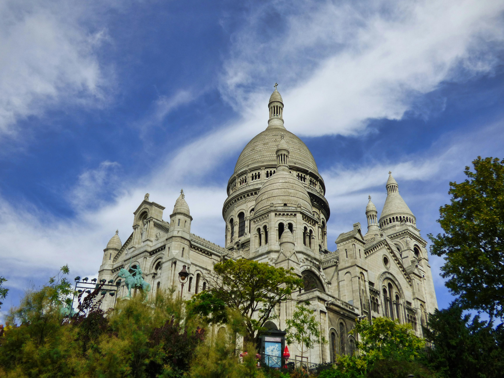
Ce point de vue en contre-plongée depuis le square Louise Michel met en valeur toute la majesté du Sacré-Cœur qui surplombe la colline. La présence de la végétation dans le cadre apporte un premier plan naturel qui contraste avec la pierre blanche.
Float right
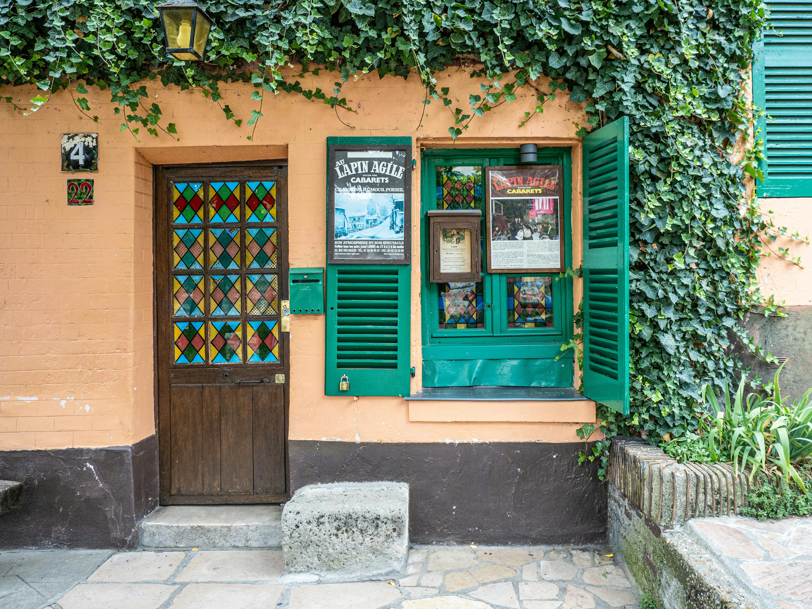
Le célèbre cabaret du Lapin Agile se détache par sa couleur rose vif et ses volets verts au milieu des arbres. Un sujet haut en couleur qui demande une gestion fine de l'exposition pour ne pas saturer les teintes naturelles.
02. Tests de structures complexes (3 et 4 colonnes)
Analyse de la flexibilité et de l'empilement sur des grilles denses.
02A. Structure Trio (3 Colonnes avec Images)
Axe Principal : Les escaliers

Les marches de la rue Foyatier offrent un rythme graphique répétitif parfait pour les amateurs de photographie minimaliste.
Axe Principal : Les pavés
Après la pluie, les pavés de Montmartre brillent et reflètent la lumière des lampions, ajoutant une texture riche à l'image.
Axe Principal : Le funiculaire
Un élément mécanique moderne qui s'intègre au paysage depuis 1900, offrant un sujet dynamique en mouvement.
02B. Structure Trio (3 Colonnes)
Axe Principal : La faune artistique
Montmartre reste un pôle d'attraction pour les portraitistes du monde entier. Les visages concentrés des artistes au travail contrastent avec la curiosité des passants.
Axe Principal : Le tourisme local
Malgré l'affluence, il est possible de capter des moments de calme au détour d'une ruelle ou tôt le matin, révélant le vrai visage de la Butte.
Axe Principal : L'héritage historique
Chaque coin de rue à Montmartre a une histoire à raconter, de la Commune de Paris aux ateliers fréquentés par Picasso et Van Gogh.
03A. Grille de Précision (4 Colonnes + images)
Axe Principal : Toits
Une vue plongeante sur les toits en zinc typiques qui s'étendent à perte de vue.
Axe Principal : Façades
Les détails des volets en bois et des balcons en fer forgé fleuris.
Axe Principal : Ateliers
Les grandes verrières des anciens ateliers d'artistes du XIXe siècle.
Axe Principal : Cafés
Les devantures colorées des bistrots qui animent le quartier.
03B. Grille de Précision (4 Colonnes)
Axe Principal : Matériel
Utiliser une focale fixe 35mm permet de rester discret tout en captant l'essence des scènes de rue sans déformation.
Axe Principal : Heures
L'heure bleue reste le meilleur moment pour équilibrer la lumière du ciel avec l'éclairage artificiel des boutiques.
Axe Principal : Saison
L'automne apporte une douce mélancolie avec la brume matinale qui enveloppe les hauteurs du Sacré-Cœur.
Axe Principal : Tirage
Un papier mat texturé (type Hahnemühle) mettra magnifiquement en valeur le grain de la pierre et du pavé.